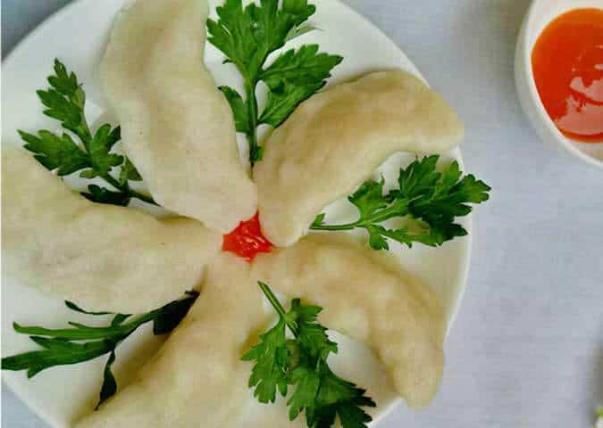

Phú Thọ không chỉ là nơi đất tổ của các vị vua Hùng mà còn là mảnh đất của nhiều đặc sản độc đáo khó có thể tìm thấy được ở những nơi khác trên cả nước. Giờ hãy cùng khám phá những món ngon đặc sản Phú Thọ mà du khách không thể bỏ qua khi đến đây nhé!
Bánh tai hay bánh tai heo thực chất là một loại bánh có cách chế biến tương đối đơn giản nhưng lại được nhiều người dân nơi đây ưa thích. Sở dĩ được gọi là bánh tai heo bởi hình dáng của bánh cong cong, thuôn dài giống như hình của một chiếc tai heo. Các bạn có thể dễ dàng tìm thấy bánh tai heo ở bất kì đâu trên mảnh đất Phú Thọ.
Nguyên liệu để làm ra món ăn này bao gồm gạo tẻ, thịt lợn và một số gia vị đơn giản. Phần gạo tẻ được xay ra thật mịn, sau đó vào cùng với nước tạo thành một hỗn hợp bột. Phần thịt lợn được tẩm các loại gia vị, được bọc trong hỗn hợp gạo tẻ sau đó được đem đi hấp. Như thế là đã ra một chiếc bánh tai heo đúng chuẩn hương vị Phú Thọ.
Thịt chua là một món ăn đặc sản của người dân tộc Mường tại tỉnh Phú Thọ. Món ăn này có hương vị có hương vị rất đặc biệt không thể lẫn vào đâu được. Thịt dùng để làm thịt chua phải là phần thịt ba chỉ và phần thịt nạc thai. Sau đó thịt sẽ được lên men theo công thức đặc biệt của người Mường. Thịt chua ngon nhất phải kể đến thịt chua của vùng Thanh Sơn, lợn ở đây được người dân nuôi chủ yếu bằng rau củ và trái cây rừng nên có hương vị thơm ngon tự nhiên. Thịt chua thường được ăn kèm với các loại rau sống như lá sung, đinh lăng, chấm cùng với tương ớt, trở thành một món nhậu cùng với bia lạnh rất hợp lí.
Nhiều người có thể đã ăn qua món củ sắn nhưng còn rau sắn thì lại ít người biết. Rau sắn thực chất là loại rau được mọc cùng với củ sắn. Phần rau sắn sẽ được người dân hái về, vò nát, ngâm vào nước để cho bớt nhựa. Rồi sau đó sẽ được đem đi trộn với muối, ướp gi vị và được ủ trong khoảng từ 4 – 5 ngày.
Rau sắn được sử dụng giống như dưa, cà muối, trở thành một món ăn kèm cùng với các món chính. Ngoài ra rau sắn còn hay được người dân sử dụng để nấu canh với rô đồng. Vị của rau sắn chua chua hòa quyện với vị béo của cá rô, khiến người ăn cứ muốn húp xì xụp mãi không thôi.